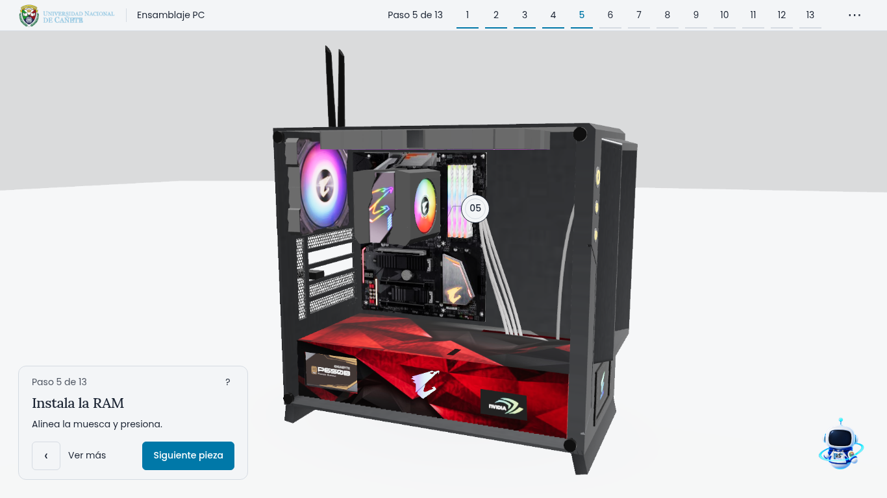
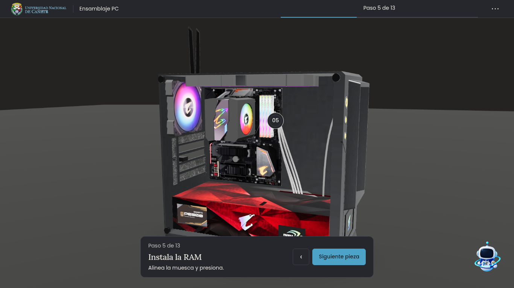

A. Manual de taller
Superficies claras, secuencia numerada y una tarjeta junto al modelo. Mi recomendación para enseñar y proyectar: lectura directa y una escena fácil de reconocer.

Dos propuestas para un simulador más limpio. Prueba el menú, avanza por los pasos y mira la galería. Las escenas usan capturas del modelo real; el montaje y sus animaciones se integrarán después de elegir el diseño.
Superficies claras, secuencia numerada y una tarjeta junto al modelo. Mi recomendación para enseñar y proyectar: lectura directa y una escena fácil de reconocer.

Grafito cálido, progreso discreto y una barra inferior con la acción del paso. Una dirección más cercana a un visor de producto, con pocos elementos en pantalla.

Ambas agrupan opciones en un solo menú, reducen la presencia de Sky y utilizan fuentes locales. En móvil, la acción queda abajo y el menú abre como hoja inferior.
Atajos: / abre opciones; Escape cierra. En presentación, usa las flechas o el espacio para avanzar. Las estadísticas finales son ilustrativas y la descarga GLB todavía no está conectada en estas maquetas.
Abrir el simulador actualPC y RAM: Gaming Desktop PC, de Yolala1232 (Sketchfab), según los metadatos de los modelos incluidos. Licencia CC-BY-4.0.
Exterior de laptop: Gaming Laptop - Computer, de Diego G. (empty_mirror), CC-BY-4.0. Los internos son geometría educativa del proyecto.
Capturas derivadas del simulador, con ajustes de luz, fondo y encuadre para comparar las propuestas. Sky, imágenes y fuentes proceden de los recursos locales del proyecto UNDC.